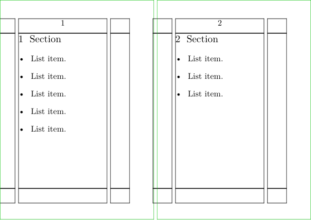

Contents
Summary
The command
\testpage
inserts a page break if there is less than the specified amount of space left on the current page.
Settings
Description
To keep a run of text together, test the number of lines available on the current page using
\testpage
[n], where n is the number of lines required. If there are not n lines available, a page break will be inserted at the location of the
\testpage
command.
Examples
Example 1
-
\setuppapersize[A8][A7,landscape] \setuplayout[width=3cm] \setuppaper[nx=2] \setuparranging[XY] \showframe \setuphead[section][before={\testpage[10]}] \starttext \section[title={Section}] \startitemize \dorecurse{5}{ \startitem List item. \stopitem } \stopitemize \dorecurse{2}{ \section[title={Section}] \startitemize \dorecurse{3}{ \startitem List item. \stopitem } \stopitemize } \stoptext
- 
Example 2
-
\setuppapersize[A8][A7,landscape] \setuplayout[width=3cm] \setuppaper[nx=2] \setuparranging[XY] \showframe \setuphead[section][before={\testpage[][2.5cm]}] \starttext \section[title={Section}] \startitemize \dorecurse{5}{ \startitem List item. \stopitem } \stopitemize \dorecurse{2}{ \section[title={Section}] \startitemize \dorecurse{3}{ \startitem List item. \stopitem } \stopitemize } \stoptext
-